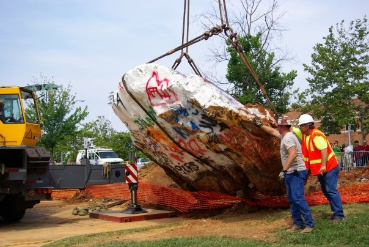

back
2009

the rock goes on a road trip
When construction plans for the Student Health Center were announced, university officials decided to move the Rock across the intersection. During a 13-hour process on July 15, 2009, the Rock was moved 275 feet to its current location on the lawn of the Natalie L. Haslam Music Center. The move was broadcast live on the student radio station, WUTK 90.3 "The Rock."
The move was made cautiously amid concerns about damaging or breaking the iconic campus symbol. As workers used a massive crane to hoist the Rock from the ground, they determined that even the largest truck available in Knox County was simply not large enough. Instead, a specialized heavy-hauling flatbed was brought in. Once the Rock was loaded onto the flatbed, the truck began the incredibly slow, harrowing ride down Pat Head Summitt Street straddling an asphalt-filled utility trench that had been dug in the center of the road.
The Rock was settled into a freshly dug pit in its new location at about 9 p.m. that night in the midst of a thunderstorm. Dozens of students, faculty, staff, alumni, and others watched throughout the day. The Rock was reopened for as a place of free expression at a dedication ceremony in August 2009.